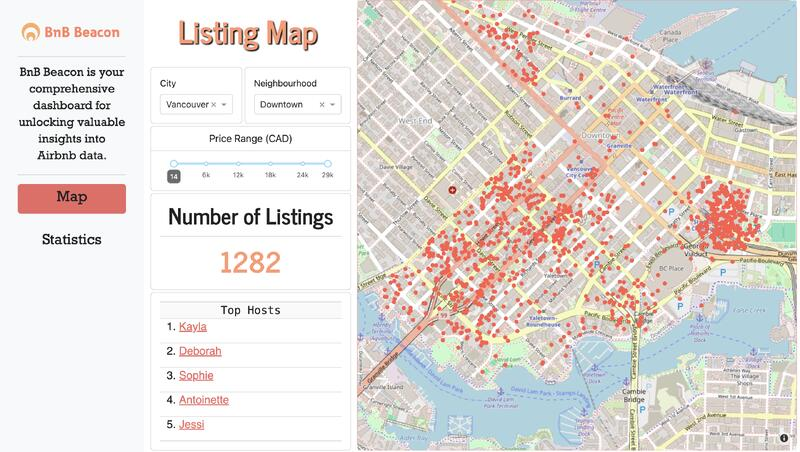

Data Scientist | Capstone Project
Greenspace Health, Canada
May 2024 - June 2024
I had the opportunity of working for Greenspace Health as part of the MDS Capstone project at UBC. Greenspace specializes in measurement based care, helping mental health professionals track patient care using their scores on different assessments. Through this project, we helped to create an end-to-end predictive modelling solution to be integrated and deployed into existing platform.
Key learnings:
- Conducted data wrangling on AWS Snowflake with complex SQL queries to extract and clean relevant data.
- Performed exploratory data analysis (EDA) to identify data trends and create visualizations using Altair
- Evaluated various predictive modeling techniques, including Neural Networks, XGBoost, and Random Forests
Software Developer
Quinbay Technologies, India
July 2021 - June 2023
As a Software Developer at Quinbay Technologies, I actively participated in every stage of the Software Development Life Cycle. My responsibilities encompassed design discussions, coding, code review, development testing, overseeing production deployments, and conducting feature showcases. I had the opportunity to build robust and scalable microservices, utilizing Java with Spring Boot for the backend and frameworks like Vue for the frontend. This role enabled me to enhance my technical skills and contribute effectively to the development of high-quality software solutions.
Key learnings:
- Commended by team management for independently creating comprehensive Sitemaps for the platform using Server-Side Rendering (SSR), resulting in a 10% enhancement in SEO (Search Engine Optimization) rankings for the webpages.
- Performed various successful deployments of microservices built in Java Spring Boot to cloud platforms like Kubernetes.
- Evaluated various predictive modeling techniques, including Neural Networks, XGBoost, and Random Forests
Software Developer - Intern
Quinbay Technologies, India
January 2021 - June 2021
As an intern at Quinbay Technologies, I went through extensive training on various frontend and backend technologies for web development. After a one month training period, I also had the opportunity to work on production features with a team and got to learn a lot about developing efficient software solutions working in an Agile framework. Based on my performance, I was promoted to a full time position at the company.
Key learnings:
- Collaborated with a 10-member team in creating a social media website using Java Spring Boot as a project, showcasing effective teamwork and project management abilities.
- Completed extensive training in frontend frameworks such as Vue and HTML, and backend frameworks including Spring boot and Java.
- Contributed to the development of live production features during an internship, actively participating in a team-oriented environment to enhance practical experience.
Bnb Beacon - Airbnb Analytics Dashboard
Github Project Repository
Bnb Beacon is an advanced analytics dashboard designed to provide insightful visualizations and interactive data analysis for Airbnb listings across seven major cities in Canada. This project showcases a seamless integration of data science and web development skills, utilizing the power of Python and the Dash framework to deliver a user-friendly and informative platform.
Key features:
-
Interactive Dashboard:
- Developed using Python and Dash, the dashboard offers a responsive and dynamic user interface.
- Users can easily navigate through various sections to explore different data insights.
-
Comprehensive Listing Map:
- The dashboard includes a detailed map displaying Airbnb listings in seven prominent Canadian cities.
- Each listing is interactive, allowing users to click and view more information about the property and its host.
- Direct links to the official Airbnb website are provided for users who wish to explore further.
-
Advanced Data Visualization:
- Implemented sophisticated data visualization techniques in Altair to present data in a clear and engaging manner.
- Users can access detailed information about listings, including pricing, ratings, and host details.
-
In-Depth Analysis:
- The dashboard is built using real data from Airbnb, ensuring the insights and visualizations are accurate and relevant.
- IMultiple tabs within the dashboard offer comprehensive analysis of pricing and rating trends.
- Interactive visualizations help users understand market dynamics and identify patterns.
-
Deployment on Heroku:
- The project was deployed on Heroku, making it easily accessible to users from anywhere.

The "Milk Data Classification" project focuses on developing a sophisticated machine learning model to accurately classify milk quality based on various quantitative and qualitative predictors. This project leverages cutting-edge data science techniques and machine learning algorithms to achieve high accuracy in predicting milk quality, making it a valuable tool for the dairy industry.
Key features:
-
Supervised Machine Learning Model Development:
- Engineered a sophisticated machine learning model to categorize milk quality.
- Utilized a diverse range of quantitative and qualitative predictors to ensure comprehensive analysis.
- Implemented and evaluated various supervised learning algorithms using the Scikit-learn library.
-
Data Wrangling and Standardization:
- Executed comprehensive data wrangling techniques to clean and preprocess the data.
- Applied standardization procedures to enhance the model's performance and reliability.
-
Hyper-parameter Tuning:
- Employed GridSearchCV for hyper-parameter tuning to optimize the model.
- Achieved a remarkable 99.55% accuracy on the test set, showcasing the model's effectiveness.